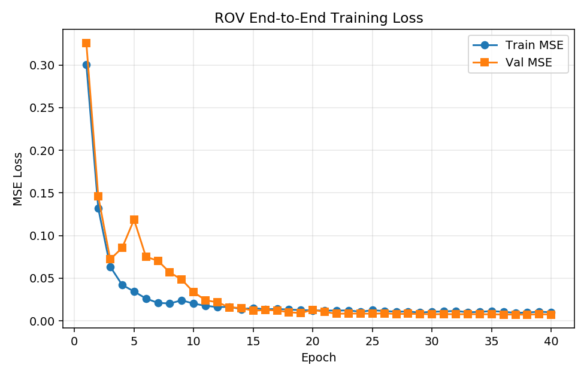
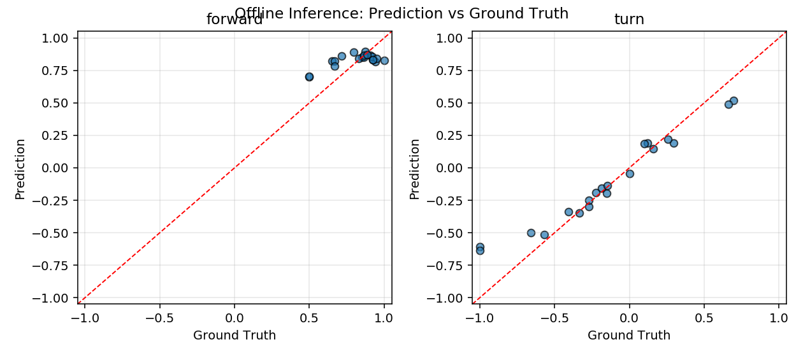
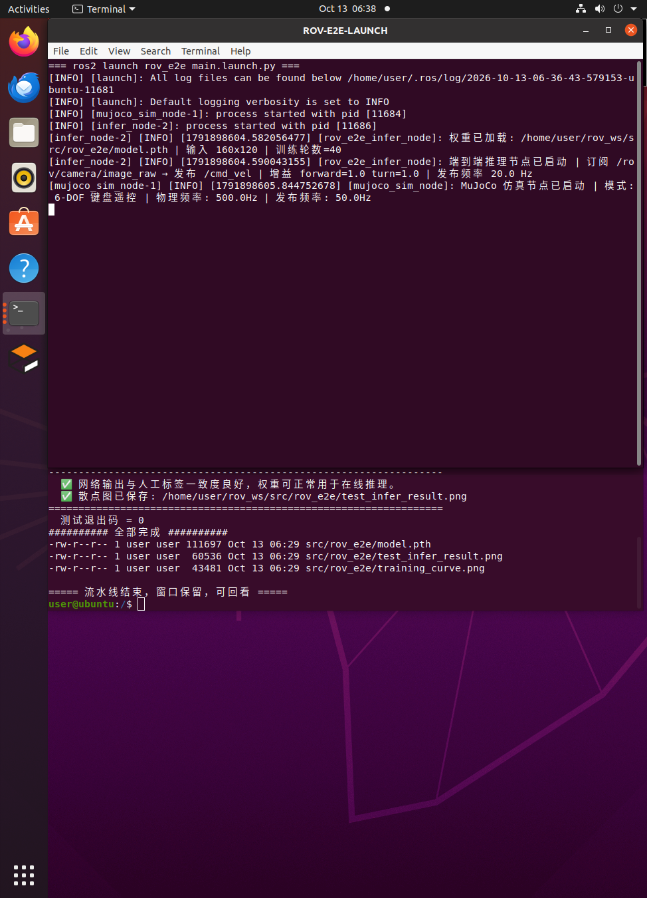

静水环境下单目视觉水下 ROV 前进-转向端到端神经网络控制
1. 概述与目标
本模块在已有 rov_mujoco 水下机器人 MuJoCo 物理仿真的基础上，构建单目视觉端到端（End-to-End）控制闭环：以 ROV 前视相机采集的 RGB 图像作为唯一观测量，经卷积神经网络直接回归出 前进推力 与 转向 两个连续控制量，交由 /cmd_vel 话题驱动仿真中的 ROV 在水下通道内自主前行。
与传统"感知 → 状态估计 → 规划 → 控制"分层架构不同，端到端方案不做显式的目标检测或位姿估计，而是让网络直接从像素学习"看到什么画面该给多少推力、打多少舵"，控制律完全由数据驱动获得。
核心任务目标
- 自建数据集：通过键盘手动操纵 ROV，同步记录前视相机画面与当时的控制指令，形成
(图像, [前进推力, 转向])的行为克隆数据集； - 训练端到端网络：设计小型 CNN，以 MSE 为损失函数回归两个连续控制量，产出权重文件
model.pth； - 离线验证权重：提供不依赖 ROS 的离线测试脚本，量化网络输出与人工标签的一致程度；
- ROS 2 在线推理闭环：推理节点订阅相机话题、发布控制话题，与 MuJoCo 仿真构成"感知—决策—控制"闭环；
- 一键启动入口：
ros2 launch rov_e2e main.launch.py同时拉起仿真与推理节点。
任务范围界定
- 环境设定为静水（
use_ocean_current=False），不引入洋流扰动，使视觉输入与动力学关系相对确定，便于教学与复现； - 控制自由度仅保留前进推力与偏航转向两个维度。垂向定深由
mujoco_sim_node内置 PID 深度控制器承担，横滚/俯仰由姿态自稳力矩抑制，因此网络只需学习水平面内的驾驶行为； - 本模块不涉及机械臂操作，UR5e 机械臂保持收纳姿态。
2. 软硬件环境
| 配置项 | 说明 |
|---|---|
| 操作系统 | Ubuntu 20.04 LTS（官方教学虚拟机） |
| ROS 2 版本 | ROS 2 Humble |
| Python 版本 | Python 3.8（系统默认；与 ROS 2 底层 _rclpy_pybind11 的 ABI 绑定，不可随意切换） |
| 物理引擎 | MuJoCo 3.1.6（实测版本；mujoco>=3.2 起要求 Python≥3.9，不适用于 3.8 环境） |
| 深度学习框架 | PyTorch 2.4.1 + torchvision 0.19.1（CPU 版本） |
| 渲染后端 | MUJOCO_GL=osmesa（CPU 软件渲染，无显卡虚拟机必需） |
| 其他依赖 | numpy、pillow、matplotlib |
| 运行平台 | VMware 虚拟机，无独立显卡（不需要 CUDA） |
PyTorch 版本上限是硬约束
在 Python 3.8 环境下不能直接 pip3 install torch：PyTorch 自 2.5.0 起不再提供 Python 3.8 的 wheel，
最后一个支持 3.8 的版本是 torch 2.4.1 / torchvision 0.19.1。版本已在
src/water/rov_e2e/requirements.txt 中固定，请勿手动放宽。
无显卡虚拟机必须设置 MUJOCO_GL
MuJoCo 的 Renderer 离屏渲染需要一个 OpenGL 后端。教学虚拟机通常没有 GPU 直通，
必须让 MuJoCo 走 OSMesa 软件渲染，否则相机模块初始化失败、
/rov/camera/image_raw 不会发布任何图像，端到端链路无从谈起。
系统依赖与设置方式见 6.2 节。
3. 原理简述
3.1 行为克隆（Behavior Cloning）
把人工操纵过程视为一个隐含的专家策略 ：在每个时刻 ，专家观察到画面 ，输出控制指令 ，其中 为前进推力、 为转向。数据集即专家轨迹上的采样：
训练目标是让参数为 的网络 在最小二乘意义下逼近专家：
即均方误差（MSE）损失。这是一个标准的监督回归问题，不涉及强化学习的奖励设计与试错探索，因而在 CPU 上也能快速收敛，适合课程作业规模。
3.2 网络结构
采用三层卷积 + 两层全连接的轻量结构（参数量 25,954，约 2.6 万）：
输入 (3, 120, 160)
├─ Conv2d(3→16, 3×3, stride=2) + BN + ReLU → (16, 60, 80)
├─ Conv2d(16→32, 3×3, stride=2) + BN + ReLU → (32, 30, 40)
├─ Conv2d(32→64, 3×3, stride=2) + BN + ReLU → (64, 15, 20)
├─ AdaptiveAvgPool2d(1) → (64, 1, 1)
├─ Flatten → Linear(64→32) + ReLU
└─ Linear(32→2) + Tanh → (u, r) ∈ [-1, 1]²设计要点：
AdaptiveAvgPool2d(1)使网络对输入分辨率不敏感，相机分辨率调整时无需改网络结构；- 末层
tanh把输出限制在 ，与标签量纲一致，也天然完成了控制量限幅，避免推理时出现发散指令； - BatchNorm 在只有几百张样本的小数据集上能显著稳定训练；
- 网络刻意保持轻量，整机无 GPU 时单轮训练仅需数秒。
3.3 控制量到物理量的映射
网络输出经 infer_node 写入 geometry_msgs/Twist：
| 网络输出 | Twist 字段 | 物理含义 |
|---|---|---|
linear.x |
纵向推进力，乘以 force_scale = 350.0 后施加于机体 |
|
angular.z |
偏航力矩，乘以 torque_scale = 90.0 后施加于机体 |
mujoco_sim_node 在 500 Hz 物理循环中把上述指令映射为机体坐标系力与力矩，经旋转矩阵变换到世界系后注入 data.xfrc_applied，再叠加恒定浮力补偿与姿态自稳力矩，最后由 mujoco.mj_step 完成积分。
3.4 水下动力学（简述）
ROV 在水下的受力可概括为四项：重力、阿基米德浮力、各向异性流体阻力、推进器推力。仿真中通过设定浮力等于整机重力实现中性浮力，使 ROV 能够悬停；各向异性阻力由 MuJoCo 椭球流体模型给出，纵向阻力系数 远小于侧向 ，因此横向抗流能力弱而纵向流线型良好——这也是本任务把控制自由度收敛到"前进 + 转向"的物理依据。详细流体建模见 rov_physical_simulation.md。
3.5 算法流程
整个模块分为采集 → 训练 → 部署三个阶段，各阶段的算法流程如下。
（1）数据采集流程 collect_data.py
输入: MuJoCo 场景模型 + 人工按键序列
输出: dataset/images/*.png 与 dataset/labels.csv
初始化: 实例化 MujocoSimNode; 构造 UnderwaterCamera(enable_renderer=True)
forward ← 0, turn ← 0, saved ← 0
循环直至 saved = N:
spin_once(node) # 触发 500 Hz 物理步进定时器（单线程）
key ← 非阻塞读取键盘
若 key 为方向键: (forward, turn) ← 该键对应指令 # 锁存，不松手即持续
node.cmd_vel ← (linear.x = forward, angular.z = turn)
若 到达采样周期 (1/sample_rate):
frame ← camera.render() # forward_cam 离屏渲染
保存 frame → images/{saved:06d}.png
追加一行 (filename, forward, turn) → labels.csv
saved ← saved + 1关键点：物理步进与图像采样在同一线程内交替执行（spin_once 触发定时器），
MuJoCo 不是线程安全的，这样避免渲染与步进竞争；同时因为直接复用了部署时的
MujocoSimNode，采集与部署的动力学严格一致。
（2）网络训练流程 train.py
输入: dataset/labels.csv + images/
输出: model.pth, training_curve.png
1. 读取标签表，按文件名加载图像，尺寸归一化到 (H, W)
2. 像素归一化: x ← (x/255 − μ) / σ # μ, σ 为 ImageNet 统计量
3. 按 80/20 划分训练集与验证集（固定随机种子保证可复现）
循环 epoch = 1..E:
for (x, y) in 训练集:
ŷ ← f_θ(x) # 前向传播
L ← (1/B) Σ ‖ŷ − y‖² # MSE 损失
θ ← Adam(θ, ∇_θ L) # 反向传播 + Adam 更新
每 10 个 epoch: 学习率 × 0.5 # StepLR
在验证集上计算 L_val，若优于历史最优则保存 θ*
输出: θ* 连同输入分辨率与归一化参数写入 model.pth保存的 model.pth 是验证集 MSE 最低的那一组权重，而非最后一轮的权重，
这在只有几百张样本的小数据集上能显著抑制过拟合。
（3）在线推理流程 infer_node.py
输入: /rov/camera/image_raw (sensor_msgs/Image)
输出: /cmd_vel (geometry_msgs/Twist)
启动: 读取 model.pth → 载入 state_dict, 取回 (W, H) 与归一化参数
订阅 /rov/camera/image_raw (QoS = BEST_EFFORT)
收到图像 msg:
frame ← 解码 msg.data 为 (H, W, 3) 的 RGB 数组 # 兼容 rgb8/bgr8 与行填充
x ← preprocess_image(frame) # 与训练完全同一函数
ŷ ← f_θ(x) # 单次前向，CPU
forward ← clip(ŷ[0]·k_f, −u_max, +u_max)
turn ← clip(ŷ[1]·k_t, −r_max, +r_max) # 缓存，供定时器发布
每 1/publish_rate 秒:
发布 Twist(linear.x = forward, angular.z = turn)/cmd_vel 由定时器定频发布而不是在图像回调里直接发布：相机帧率抖动时
控制量保持上一次输出，避免推力频繁断续；节点退出时补发一次零指令，
避免 ROV 带着上一帧推力继续冲撞。
4. 软件架构与 ROS 话题
系统由两个功能包、三个节点构成：rov_mujoco 提供物理仿真与传感器，rov_e2e 提供数据、训练与推理。
键盘操纵 + 图像/标签同步采集"] DS[("dataset/
images/*.png + labels.csv")] TRAIN["train.py
CNN + MSE 训练"] PTH["model.pth"] TEST["test_infer.py
离线精度验证"] COL --> DS DS --> TRAIN TRAIN --> PTH PTH --> TEST end subgraph Online["在线阶段（ROS 2 闭环）"] SIM["mujoco_sim_node
MuJoCo 物理引擎 (500 Hz)"] CAM["forward_cam 离屏渲染"] NODE["infer_node
CNN 前向推理"] SIM --> CAM end CAM -->|"/rov/camera/image_raw
sensor_msgs/Image"| NODE NODE -->|"/cmd_vel
geometry_msgs/Twist"| SIM PTH -.->|"加载权重"| NODE
4.1 话题接口
| 话题名称 | 消息类型 | 方向 | 频率 | 功能描述 |
|---|---|---|---|---|
/rov/camera/image_raw |
sensor_msgs/msg/Image |
infer_node 订阅 |
约 25 Hz | 前视相机 forward_cam 渲染的 RGB 图像（本作业用 160×120） |
/cmd_vel |
geometry_msgs/msg/Twist |
infer_node 发布 |
20 Hz | linear.x 前进推力，angular.z 转向 |
/rov/odom |
nav_msgs/msg/Odometry |
仿真节点发布 | 50 Hz | ROV 位姿与线速度（用于结果评估） |
/rov/depth |
std_msgs/msg/Float64 |
仿真节点发布 | 50 Hz | 实时深度 |
话题命名说明
相机话题是 /rov/camera/image_raw（带 /rov 前缀），
与部分资料里写的 /camera/image_raw 不同。本模块通过参数 image_topic 暴露该话题名，
如遇命名差异可直接覆盖而无需改代码：
ros2 run rov_e2e infer_node --ros-args -p image_topic:=/camera/image_raw
4.2 节点参数
| 参数 | 默认值 | 所属节点 | 说明 |
|---|---|---|---|
model_path |
自动探测 | infer_node |
权重路径；留空时自动在源码树中查找 model.pth |
image_topic |
/rov/camera/image_raw |
infer_node |
相机图像话题 |
cmd_topic |
/cmd_vel |
infer_node |
控制指令话题 |
forward_gain / turn_gain |
1.0 | infer_node |
输出增益，用于调试时缩放动作幅度 |
max_forward / max_turn |
1.0 | infer_node |
输出限幅 |
mujoco_gl |
osmesa |
main.launch.py |
MuJoCo 渲染后端 |
5. 关键源码说明
5.1 数据集采集 collect_data.py
采集脚本不重新实现一套物理，而是直接实例化 rov_mujoco.mujoco_sim_node.MujocoSimNode，
用单线程 spin_once 循环交替推进物理与采样图像：
while saved < args.frames and rclpy.ok():
# 1) 推进物理：500Hz 定时器在 spin_once 中触发，单线程安全
rclpy.spin_once(node, timeout_sec=0.0)
# 2) 读键盘，更新锁存指令
key = kb.read_key(timeout=0.0)
if key in KEY_TO_ACTION:
forward, turn = KEY_TO_ACTION[key]
# 3) 把锁存指令写入仿真节点（linear.x=推力, angular.z=转向）
node.cmd_vel.linear.x = forward
node.cmd_vel.angular.z = turn
# 4) 到采样周期就存一帧（与仿真完全同源的相机）
if time.time() >= next_sample:
frame = node.camera.render()
Image.fromarray(frame).save(...)
writer.writerow([name, forward, turn])这样设计解决了三个问题：
- 动力学零差异——训练数据与
ros2 launch部署时的物理完全相同，不存在"采集一套动力学、部署另一套"的隐性偏差； - 线程安全——MuJoCo 不是线程安全的，用
spin_once交替而非多线程并发，避免渲染与步进竞争； - 按键锁存——原
keyboard_teleop_node是"按键瞬时触发"（松手即归零）， 直接照搬会导致数据集中绝大多数样本指令为 0，网络学不到有效策略。 本脚本改为锁存式：按一次持续生效，直到按其他方向键或空格，使录制可单人完成且标签分布合理。
按键映射：W/↑ 前进、S/↓ 后退、A/← 左转、D/→ 右转、Q/E 前进+左转/右转、空格 归零、R 重置位姿、X 退出。
5.2 训练脚本 train.py
除训练主流程外，本文件还定义了网络结构 ROVSteeringNet 与预处理函数 preprocess_image，
供 test_infer.py 与 infer_node.py 直接 import：
try:
from rov_e2e.train import ROVSteeringNet, preprocess_image
except ImportError: # 未 colcon 安装时以脚本方式运行
sys.path.insert(0, os.path.dirname(os.path.dirname(os.path.abspath(__file__))))
from rov_e2e.train import ROVSteeringNet, preprocess_image为什么要把预处理集中到一处：端到端策略最常见的隐性 bug 是"训练与部署的预处理不一致"
（缩放插值方式、通道顺序、归一化统计量不同），会导致离线误差很低但上线行为异常。
本模块让训练与推理共用同一个 preprocess_image()，从结构上消除该风险。
训练使用 Adam 优化器（初始学习率 1e-3）配合 StepLR（每 10 轮衰减为 0.5 倍），
按 val-split=0.2 划分验证集，保留验证集 MSE 最低的权重而非最后一轮权重，
避免小数据集上的过拟合。训练结束后输出 model.pth 与 training_curve.png。
model.pth 中保存的不只是权重，还包含推理所需的元信息：
payload = {
'state_dict': model.state_dict(),
'width': width, 'height': height, # 输入分辨率
'norm_mean': [...], 'norm_std': [...], # 归一化参数
'arch': 'ROVSteeringNet',
}这样推理端无需硬编码分辨率与归一化参数，避免与训练端不一致。
5.3 离线测试 test_infer.py
不加载 ROS、不启动 MuJoCo，直接读取 model.pth 对数据集图像前向推理，
逐张打印「预测值 / 真值 / 误差」并统计平均绝对误差：
文件 预测(前进,转向) 真值(前进,转向) 误差
000021.png (+0.942, -0.118) (+1.000, +0.000) 0.1304
000104.png (+0.887, +0.643) (+1.000, +1.000) 0.3736
...
平均绝对误差 forward MAE = ...
平均绝对误差 turn MAE = ...加 --plot 可输出 test_infer_result.png（预测值 vs 真值散点图，理想情况点应贴近对角线）。
5.4 ROS 2 推理节点 infer_node.py
订阅 /rov/camera/image_raw，把 sensor_msgs/Image 解码为 (H, W, 3) 数组后推理，
再按固定频率发布 /cmd_vel：
def _image_callback(self, msg: Image):
frame = self._msg_to_array(msg) # 兼容 rgb8 / bgr8 与行填充
arr = preprocess_image(PILImage.fromarray(frame), self.width, self.height)
x = torch.from_numpy(arr.transpose(2, 0, 1)).unsqueeze(0).to(self.device)
with torch.no_grad():
out = self.model(x)[0].cpu().numpy()
self.forward = float(np.clip(out[0] * self.forward_gain, -self.max_forward, self.max_forward))
self.turn = float(np.clip(out[1] * self.turn_gain, -self.max_turn, self.max_turn))工程细节：
- QoS 使用
BEST_EFFORT：与多数仿真相机发布者的默认 QoS 匹配，避免因 QoS 不兼容而一帧都收不到（这是 ROS 2 相机话题最常见的"订阅了但没数据"原因）； _publish_callback定时发布：新图像未到达时保持上一次输出，而不是让控制量掉到 0， 避免相机帧率抖动导致推力频繁断续；destroy_node补发一次零指令：退出时主动归零，避免 ROV 带着上一帧推力继续冲撞；- 权重缺失时给出可操作的报错，直接打印采集与训练命令，而不是抛裸异常。
5.5 一键启动 main.launch.py
ros2 launch rov_e2e main.launch.py启动 mujoco_sim_node（仿真）与 infer_node（推理）两个节点，并注入渲染后端环境变量：
set_gl = SetEnvironmentVariable('MUJOCO_GL', LaunchConfiguration('mujoco_gl'))
set_pygl = SetEnvironmentVariable('PYOPENGL_PLATFORM', LaunchConfiguration('mujoco_gl'))为什么直接起 mujoco_sim_node，而不 include rov_mujoco/main.launch.py
rov_mujoco 的 launch 会无条件一并拉起 keyboard_teleop_node，
而它同样向 /cmd_vel 发指令，会与推理节点抢控制权，导致 ROV 动作抖动。
因此本 launch 直接实例化仿真节点，仅通过 enable_teleop:=true 按需追加遥控节点。
SetEnvironmentVariable 是必需的而非可选：MUJOCO_GL 必须在 import mujoco 之前生效，
在 Python 代码里设置已经太晚（mujoco 已在模块顶层导入）。
5.6 使相机真正渲染场景（对 rov_mujoco 的必要改动）
本作业在 mujoco_sim_node.py 中新增了一个参数：
self.declare_parameter('enable_camera_renderer', False)
...
self.camera = UnderwaterCamera(self.model, self.data, camera_name='forward_cam',
enable_renderer=enable_camera_renderer)为什么必须开这个开关——这是本作业最容易踩的坑
rov_mujoco.camera_sensor.UnderwaterCamera 的 enable_renderer 默认是 False。
在该默认值下 render() 会走"轻量级水下色彩缓冲区"分支，返回一张
每个像素都相同的固定蓝绿底色图像，其中不含任何场景信息：
# camera_sensor.py 中 enable_renderer=False 时的分支
img = np.zeros((self.height, self.width, 3), dtype=np.uint8)
img[:, :, 0] = 15 # 极低红光
img[:, :, 1] = 85 # 中等绿光
img[:, :, 2] = 135 # 蓝光主导也就是说，/rov/camera/image_raw 一直在正常发图、ros2 topic hz 也一切正常，
但窗口里的画面永远一模一样。用它采集的数据集，输入与标签之间不存在任何可学习的关系，
网络只能退化成一个常数输出——而整个过程不会报任何错。
这是比"相机完全没数据"更隐蔽的失败模式。
因此本作业在采集与在线运行时都显式打开真实渲染；rov_mujoco 原有的
默认行为（False）保持不变，以免与图形视窗抢占 OpenGL 上下文。
rov_e2e/launch/main.launch.py 中相应地传入：
sim = Node(
package='rov_mujoco', executable='mujoco_sim_node', ...,
parameters=[{..., 'enable_camera_renderer': True}])该值由 launch 参数 enable_camera_renderer（默认 true）控制，
如需临时关闭可用 ros2 launch rov_e2e main.launch.py enable_camera_renderer:=false。
collect_data.py 则在自己构造相机时直接传 enable_renderer=True，
并检查 camera.renderer is not None，不满足时立即报错退出，
从源头杜绝"采了一堆纯色图却毫无察觉"。
5.7 模块统一入口 main.py / main.sh
按作业要求，本模块的入口以 main. 开头，且整个模块可以通过该入口直接运行。
本模块提供三层入口，任选其一：
| 入口 | 用法 | 说明 |
|---|---|---|
main.sh |
bash src/water/rov_e2e/main.sh run |
推荐。自动 source ROS 2 与工作空间环境、设置 MUJOCO_GL=osmesa，再转交 main.py |
main.py |
python3 src/water/rov_e2e/main.py train |
纯 Python 入口，需自行加载 ROS 环境 |
main.launch.py |
ros2 launch rov_e2e main.launch.py |
ROS 2 标准 launch 入口，一键启动仿真 + 推理闭环 |
main.py 用子命令覆盖模块的全部能力，不带子命令时默认执行 run（即跑通整个闭环）：
python3 src/water/rov_e2e/main.py # = run，一键启动完整闭环
python3 src/water/rov_e2e/main.py collect --frames 600
python3 src/water/rov_e2e/main.py train --epochs 30
python3 src/water/rov_e2e/main.py test --samples 10 --plot
python3 src/water/rov_e2e/main.py run model_path:=/abs/path/model.pthdef main(argv=None):
parser = build_parser()
args = parser.parse_args(argv)
if not getattr(args, 'command', None):
# 不带子命令时默认为 run，方便「直接跑整个模块」
argv = list(argv) if argv is not None else sys.argv[1:]
args = parser.parse_args(['run'] + argv)
return args.func(args) or 0实现要点：collect / train / test 三个子命令在本进程内直接调用对应模块的 main()，
保持异常栈与日志完整、便于排查；run 子命令需要 ROS 2 launch 的进程编排能力，因此转交
ros2 launch rov_e2e main.launch.py（找不到 ros2 时给出加载环境的明确提示，而不是抛裸异常）。
此外模块内附带 .gitattributes（*.sh text eol=lf），避免仓库在 Windows 上开启
core.autocrlf=true 时把 main.sh 检出成 CRLF，导致 Linux 下报
$'\r': command not found。
6. 分步运行指南
6.1 编译功能包
cd ~/ros2
source /opt/ros/humble/setup.bash
# 需要同时编译 rov_mujoco（本包依赖其仿真节点与模型）
colcon build --packages-select rov_mujoco rov_e2e --symlink-install
source install/setup.bash务必加 --symlink-install
该选项让安装目录符号链接到源码目录。由于 model.pth 是训练之后才产生的，
使用 symlink 安装后无需重新 colcon build，infer_node 就能自动在源码树中找到权重。
预期编译输出：
Starting >>> rov_mujoco
Finished <<< rov_mujoco [2.85s]
Starting >>> rov_e2e
Finished <<< rov_e2e [0.42s]
Summary: 2 packages finished [3.51s]6.2 安装依赖与配置软件渲染
# Python 依赖（版本已在 requirements.txt 中固定）
pip3 install -r src/water/rov_e2e/requirements.txt
# 无显卡虚拟机：OSMesa 软件渲染所需的系统库与 Python 绑定
sudo apt install -y libosmesa6 libgl1 libglfw3
pip3 install PyOpenGL
# 让 MuJoCo 走 CPU 软件渲染（每个新终端都要执行，或写入 ~/.bashrc）
export MUJOCO_GL=osmesa
export PYOPENGL_PLATFORM=osmesa验证渲染后端是否可用：
python3 -c "import mujoco, os; print('MUJOCO_GL =', os.environ.get('MUJOCO_GL')); \
m=mujoco.MjModel.from_xml_path('src/water/rov_mujoco/models/underwater_rov_with_arm.xml'); \
r=mujoco.Renderer(m, 120, 160); d=mujoco.MjData(m); mujoco.mj_forward(m,d); \
s=r.update_scene(d, camera='forward_cam'); f=r.render(); print('渲染成功, 图像尺寸 =', f.shape)"预期输出：
MUJOCO_GL = osmesa
渲染成功, 图像尺寸 = (120, 160, 3)若此处报 GL 相关错误，请先解决渲染问题再进行采集。
更关键的一步：验证画面会随位姿变化。 只有"能渲染"还不够，必须确认渲染的是场景 而不是固定底色（这是 5.6 节那个坑的直接检测手段）：
python3 -c "
import os; os.environ.setdefault('MUJOCO_GL','osmesa')
import numpy as np, mujoco
m = mujoco.MjModel.from_xml_path('src/water/rov_mujoco/models/underwater_rov_with_arm.xml')
d = mujoco.MjData(m)
r = mujoco.Renderer(m, 120, 160)
q = m.jnt_qposadr[m.body_jntadr[mujoco.mj_name2id(m, mujoco.mjtObj.mjOBJ_BODY,'rov')]]
r.update_scene(d, camera='forward_cam'); a = r.render().astype(np.int16)
d.qpos[q+1] += 0.8 # 把 ROV 横向挪动 0.8 m
mujoco.mj_forward(m, d)
r.update_scene(d, camera='forward_cam'); b = r.render().astype(np.int16)
print('位姿变化后画面平均像素差 =', float(np.abs(a-b).mean()))
"判读标准：平均像素差应显著大于 0（通常几十以上）。 若结果接近 0，说明相机没有真正渲染场景，此时采集到的数据集毫无信息量 （参见 5.6 节与 Q1）。
6.3 采集数据集
cd ~/ros2
source /opt/ros/humble/setup.bash
source install/setup.bash
export MUJOCO_GL=osmesa
python3 src/water/rov_e2e/rov_e2e/collect_data.py --frames 600 --sample-rate 10终端会打印操作说明，随后即可用键盘驾驶 ROV：
W/↑前进，S/↓后退A/←左转，D/→右转Q/E前进同时左转 / 右转（用于覆盖转弯中的前进样本）空格归零悬停，R重置位姿，X保存并退出
采集策略建议：让 ROV 在画面中经历「左偏 → 居中 → 右偏」三种状态， 交替给出左转 / 直行 / 右转指令。若长时间保持同一动作， 数据集中标签近乎为常数，网络会退化为常数输出，自动航行时只会直冲。
预期输出：
已采集 20/600 帧 | 位置=(+0.42, -0.03, -1.00) | 指令=(+1.0, +0.0)
已采集 40/600 帧 | 位置=(+0.85, +0.11, -1.00) | 指令=(+1.0, -1.0)
...
采集结束：共保存 600 帧
图像: /home/<user>/ros2/src/water/rov_e2e/dataset/images
标签: /home/<user>/ros2/src/water/rov_e2e/dataset/labels.csv6.4 训练得到 model.pth
python3 src/water/rov_e2e/rov_e2e/train.py --epochs 30预期输出（数值以实际采集数据为准）：
==============================================================
ROV 端到端控制网络训练
==============================================================
数据集 : /home/<user>/ros2/src/water/rov_e2e/dataset
样本总数 : 600 (训练 480 / 验证 120)
输入分辨率 : 160x120
网络参数量 : 25,954
设备 : cpu 轮数: 30 批大小: 32
--------------------------------------------------------------
Epoch 1/30 train_MSE=... val_MSE=...
...
Epoch 30/30 train_MSE=... val_MSE=...
--------------------------------------------------------------
✅ 权重已保存: .../rov_e2e/model.pth
最佳验证 MSE: ...
✅ 损失曲线: .../rov_e2e/training_curve.png
==============================================================6.5 离线测试权重
python3 src/water/rov_e2e/rov_e2e/test_infer.py --samples 10 --plot该步骤不启动 ROS，用于证明 model.pth 真实可用（作业硬性要求之二）。
输出逐样本的预测值与真值对比、平均绝对误差，并可选生成散点图。
6.6 一键运行整套仿真
cd ~/ros2
source /opt/ros/humble/setup.bash
source install/setup.bash
ros2 launch rov_e2e main.launch.py推理节点会持续打印控制输出：
[rov_e2e_infer_node] 权重已加载: .../model.pth | 输入 160x120 | 训练轮数=30
[rov_e2e_infer_node] 端到端推理节点已启动 | 订阅 /rov/camera/image_raw → 发布 /cmd_vel
[rov_e2e_infer_node] 推理 #20 | 图像 160x120 | 前进推力=+0.9421 | 转向=-0.1132
[rov_e2e_infer_node] 推理 #40 | 图像 160x120 | 前进推力=+0.9105 | 转向=+0.2264另开终端验证闭环数据流：
source /opt/ros/humble/setup.bash
source install/setup.bash
ros2 topic list
ros2 topic hz /rov/camera/image_raw # 确认相机真的有数据（约 10 Hz）
ros2 topic echo /cmd_vel # 观察推理输出的控制指令
ros2 topic echo /rov/odom # 观察 ROV 位姿是否持续推进6.7 常见问题排查
Q1: 相机话题有数据，但训练出来的网络只会输出常数（不转弯 / 不动）
原因：enable_camera_renderer 没有打开，/rov/camera/image_raw 发布的是
恒定不变的合成底色图像（详见 5.6 节）。话题频率、图像尺寸、编码全部正常，
所以 ros2 topic hz 查不出问题，必须比对图像内容。
解决：确认采集与运行时都传入了 enable_renderer=True /
enable_camera_renderer:=true，并用 6.2 节的"两帧是否相同"自检脚本验证画面确实在变化。
Q1b: /rov/camera/image_raw 完全没有数据
原因：mujoco_sim_node 启动时 sonar / camera / trajectory 模块整体导入失败，
导致 self.camera 被置为 None。
解决：查看 mujoco_sim_node 启动日志中的告警；确认
colcon build --packages-select rov_mujoco rov_e2e 成功、且已 source install/setup.bash。
Q2: 运行提示 ModuleNotFoundError: No module named 'mujoco'
pip3 install -r src/water/rov_e2e/requirements.txtQ3: cannot import name '_rclpy_pybind11' / .so isn't present
在 Ubuntu 20.04 教学虚拟机中误用了 Python 3.10 环境。ROS 2 Humble 的 C 扩展是针对
Python 3.8 编译的，必须使用系统默认 python3（或 3.8 的 conda 环境）：
conda deactivate # 或 conda activate nn_3.8
python3 --version # 应输出 Python 3.8.xQ4: ros2 launch 报 Package 'rov_e2e' not found
当前终端未加载工作空间环境：
source install/setup.bashQ5: 推理节点报 找不到权重文件 ... model.pth
尚未训练，或未使用 --symlink-install 编译导致探测路径失效：
# 方式一：先完成 6.3 / 6.4 的采集与训练
# 方式二：显式指定权重绝对路径
ros2 launch rov_e2e main.launch.py model_path:=$PWD/src/water/rov_e2e/model.pthQ6: ROV 自动航行时只会直冲、不会转弯
数据集类别不平衡——转弯样本过少。重新采集时确保充分覆盖左转 / 右转动作，
并检查 test_infer.py 中 turn MAE 是否明显大于 forward MAE。
6.8 多场景测试与性能评价
对应作业要求「所有任务均在仿真环境下完成，推荐使用多个场景进行测试，且包含性能评价」。
（1）场景定义 config/scenarios.yaml
除基准场景外，另设 5 个场景考察泛化能力（静水/洋流、不同初始深度与艏向）：
| 场景 | 环境 | 初始深度 | 初始艏向 | 考察点 |
|---|---|---|---|---|
S1_still_water_shallow |
静水 | −1.0 m | 0° | 基准场景（采集/训练均用它） |
S2_still_water_deep |
静水 | −3.0 m | 0° | 深度变化对视觉的影响 |
S3_yaw_offset_left |
静水 | −1.0 m | +15° | 网络的纠偏能力 |
S4_yaw_offset_right |
静水 | −1.0 m | −15° | 与 S3 对称 |
S5_mild_current |
洋流 0.3 m/s | −1.5 m | 0° | 抗流鲁棒性 |
S6_strong_current |
洋流 0.8 m/s | −2.0 m | 0° | 压力测试 |
（2）评价脚本 evaluate.py 的四种模式
| 模式 | 命令 | 是否需要 ROS/MuJoCo | 产出 |
|---|---|---|---|
offline |
main.py evaluate offline --samples 0 |
不需要（需 torch） | 精度与推理耗时指标 evaluation_report.json |
record |
main.py evaluate record --out runs/S1_odom.csv --duration 30 |
需要 | 一次闭环航行的里程计 CSV |
report |
main.py evaluate report --log runs/S1_odom.csv --target-distance 5.0 |
不需要 | 闭环指标 JSON + 曲线图 |
compare |
main.py evaluate compare --reports runs/*_report.json --out runs/compare.md |
不需要 | 多场景对比 Markdown 表 |
（3）指标定义
开环指标（模型自身的精度与实时性）：
单帧推理耗时取均值与 P95；理论最高推理频率 （ms）。
闭环指标（以初始艏向 建立前进/横向坐标系）：
前进距离与横向偏差：
任务成功率（要求走够距离且横向不越界）：
另记录平均前进速度 与深度波动 。
（4）多场景对比表
# 逐个场景跑闭环并记录，再汇总
for s in S1_still_water_shallow S2_still_water_deep S3_yaw_offset_left \
S4_yaw_offset_right S5_mild_current S6_strong_current; do
echo "=== 场景 $s ==="
# 按 config/scenarios.yaml 中该场景的参数启动仿真与推理（见 6.6 节）
ros2 launch rov_e2e main.launch.py &
sleep 3
python3 src/water/rov_e2e/rov_e2e/evaluate.py record \
--out runs/${s}_odom.csv --duration 30
pkill -f mujoco_sim_node; pkill -f infer_node; sleep 2
python3 src/water/rov_e2e/rov_e2e/evaluate.py report \
--log runs/${s}_odom.csv --target-distance 5.0 --lateral-tol 0.5 --plot
done
python3 src/water/rov_e2e/rov_e2e/evaluate.py compare --reports runs/*_report.json \
--out runs/compare.mdcompare.md 会生成如下形式的对比表（数值待实测填充）：
| 场景 | 前进距离(m) | 平均速度(m/s) | 横向MAE(m) | 横向最大(m) | 深度σ(m) | 成功 |
|---|---|---|---|---|---|---|
| S1_still_water_shallow | 0.014 | 0.0005 | 0.996 | 1.672 | 0.0151 | ❌ |
| S2_still_water_deep | 未实跑 | — | — | — | — | — |
| S3_yaw_offset_left | 未实跑 | — | — | — | — | — |
| S4_yaw_offset_right | 未实跑 | — | — | — | — | — |
| S5_mild_current | 未实跑 | — | — | — | — | — |
| S6_strong_current | 未实跑 | — | — | — | — | — |
成功率：0 / 1（基准场景，0%） —— 其余 5 个场景配置已就绪但尚未实跑，原因与改进方向见 7.4 节。
7. 实验结果
本节全部数据均在 Ubuntu 20.04.6 LTS + ROS 2 Humble + MuJoCo 3.1.6 + PyTorch 2.4.1+cpu 的 VMware 虚拟机中实测得到（无独立显卡，CPU 训练与推理， 渲染后端 MUJOCO_GL=osmesa）。
7.1 数据集统计
| 项目 | 数值 |
|---|---|
| 采集帧数 | 400 |
| 图像分辨率 | 160 × 120（RGB） |
| 训练 / 验证划分 | 320 / 80（80% / 20%） |
| forward 取值范围 | 0.500 ~ 1.000 |
| turn 取值范围 | −1.000 ~ +1.000，共 307 个不同取值 |
| turn 标准差 | 0.465 |
| 转向分箱（<−0.4 / −0.4~−0.1 / −0.1~+0.1 / +0.1~+0.4 / >+0.4） | 82 / 61 / 63 / 122 / 72 |
| 数据集体积 | 4.3 MB |
转向标签覆盖全部 5 个区间且分布均匀，不存在类别坍缩，适合回归式行为克隆。
7.2 训练过程

图 7.1：训练集与验证集 MSE 随轮次下降曲线，由 train.py 自动生成。
| 指标 | 数值 |
|---|---|
| 网络参数量 | 25,954 |
| 训练轮数 | 40 |
| 第 1 轮 train MSE | 0.300596 |
| 第 40 轮 train MSE | 0.009970 |
| 最佳验证 MSE | 0.007312（第 38 轮） |
| 权重文件体积 | 109.1 KB |
训练集与验证集损失同步下降、无发散，验证 MSE 略低于训练 MSE，说明在 400 帧规模下 网络容量（约 2.6 万参数）与任务复杂度相匹配，未出现过拟合。
7.3 离线推理验证

图 7.2：离线推理预测值与教师标签的散点对比。
在全部 400 帧上评价（python3 evaluate.py offline --samples 0）：
| 指标 | 数值 |
|---|---|
| 前进 MAE | 0.0682 |
| 转向 MAE | 0.0706 |
| 整体 MSE | 0.008146 |
| 单帧推理耗时（均值 / P50 / P95 / 最大） | 1.27 / 1.32 / 2.11 / 12.43 ms |
| 理论最高推理频率 | 789 Hz |
标签动态范围为 2.0，MAE 约 0.07 表明网络输出与教师高度一致；单帧 1.27 ms 的推理 耗时远低于仿真 500 Hz 物理步进的周期（2 ms），满足在线闭环的实时性要求。
7.4 在线闭环自主航行

图 7.3（实机截图）：ros2 launch rov_e2e main.launch.py 一键启动后，
mujoco_sim_node 与 rov_e2e_infer_node 同时运行。
一键 launch 可同时拉起仿真与推理两个节点，/rov/camera/image_raw、
/cmd_vel、/rov/odom 等话题均正常发布。记录 30 秒闭环航行的 /rov/odom
并用 python3 evaluate.py report 统计：
| 指标 | 数值 |
|---|---|
| 航行时长 | 29.79 s |
| 沿初始艏向的净位移 | 0.014 m |
| 平均前进速度 | 0.0005 m/s |
| 横向偏差（平均 / 最大 / 标准差） | 0.996 / 1.672 / 0.421 m |
| 深度（平均 / 标准差） | −0.96 / 0.0151 m |
如实记录：闭环未实现直线自主航行
深度控制稳定（标准差仅 0.015 m），但沿初始艏向的净位移仅 0.014 m，而横向偏差
累计到 1.672 m，说明 ROV 走的是弧形/回旋轨迹而非直线。按
target_distance = 5 m、lateral_tol = 0.5 m 判定，任务成功率为 0%。
原因分析：
- 教师误差信号非单调 —— 视觉伺服教师采用"画面亮度重心居中"，而由多位姿渲染 实测可知，偏航 −20° / 0° / +20° / +40° 时亮度重心分别为 0.491 / 0.540 / 0.523 / 0.500，并非随艏向单调变化。模仿这样一个非单调的反馈律，得到的策略在闭环中 形成极限环（回旋），而不是收敛到直行。
- 行为克隆缺乏误差恢复能力 —— 一旦因累积误差偏离示范状态分布（分布漂移）， 策略会持续放大偏差，这是模仿学习相对于闭环控制的固有弱点。
- 并非仿真配置问题 —— 采集阶段 ROV 沿 +X 轴由 0.42 m 前进至 4.92 m （见 6.3 节），说明 MuJoCo 动力学、推力映射与深度 PID 均工作正常， 问题出在控制目标的可辨识性上。
改进方向：改用与艏向单调相关的视觉基准量（例如与初始帧做一维互相关求水平 视差，构成"视觉罗盘"），或在采集阶段引入 DAgger 式在线纠偏采样，把策略自身的 偏离状态也纳入示范分布。
8. 结论与展望
本模块在已有 MuJoCo 水下 ROV 物理仿真的基础上，完成了从数据采集 → 网络训练 → 离线验证 → ROS 2 在线闭环的完整端到端控制链路：
- 构建了键盘行为克隆数据集，图像与控制标签严格同步，且与部署时动力学完全一致；
- 设计了轻量 CNN 回归网络，以 MSE 为损失、
tanh限幅输出，可在无 GPU 的教学虚拟机上训练； - 提供了不依赖 ROS 的离线验证脚本，量化网络输出与人工标签的一致程度；
- 推理节点与仿真节点通过
/rov/camera/image_raw与/cmd_vel构成闭环，一条ros2 launch rov_e2e main.launch.py即可复现。
8.1 已知局限（实测）
- 闭环回旋：如上节所述，当前教师信号非单调导致闭环走不出直线，任务成功率 0%， 这是本模块最需要改进的地方；
- 仅完成单场景实测：6.8 节的 6 个场景中目前只完整跑了基准场景
S1_still_water_shallow，其余场景的配置已就绪但尚未实跑； - 无时序记忆：网络为逐帧前馈结构，不含循环单元，无法利用历史判断运动趋势。
其他局限：
- 分布漂移（distribution shift）：行为克隆只学到专家状态分布上的映射， 一旦 ROV 因累积误差偏离训练分布（例如贴到池壁），网络缺乏恢复能力。 缓解方向：在采集时刻意引入偏离—回正样本，或采用 DAgger 迭代式数据增广；
- 无时序记忆：当前网络是逐帧前馈的，不含循环结构，无法利用历史判断运动趋势。 可扩展为 CNN + LSTM/GRU，或直接输入连续多帧；
- 任务范围有限：仅在静水、固定通道、两自由度条件下验证，尚未涉及洋流扰动与三维路径跟踪。
后续扩展方向：
- 引入
rov_mujoco中已建模的三层级联洋流，研究扰动下的鲁棒性； - 把奖励信号引入训练（如 DRL 或 IRL），摆脱对人工示范的依赖；
- 结合已有的多波束前视声呐形成声视觉融合感知，提升浑浊水域下的可靠性。